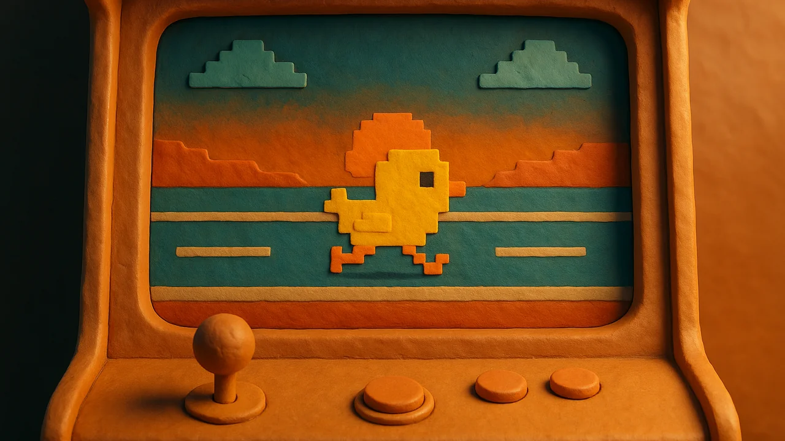
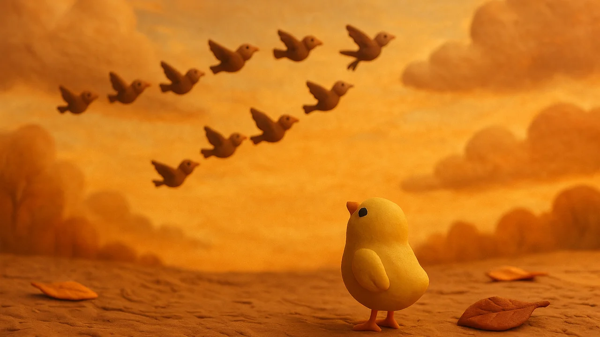
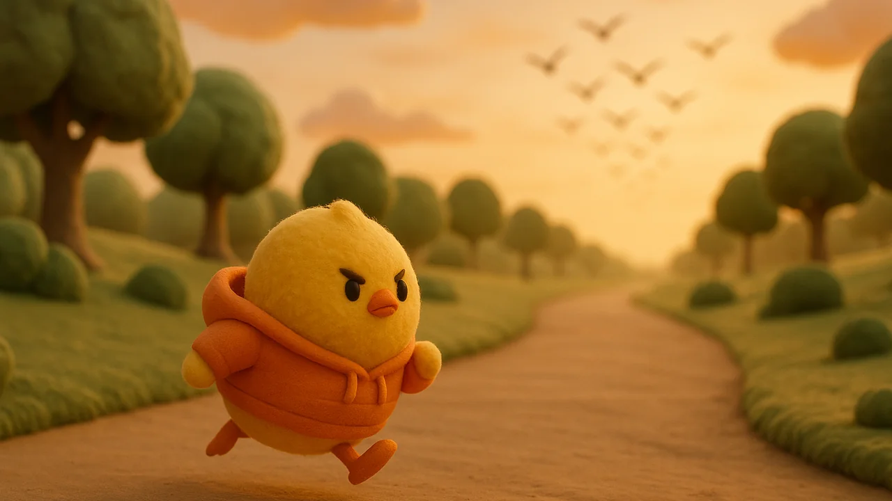
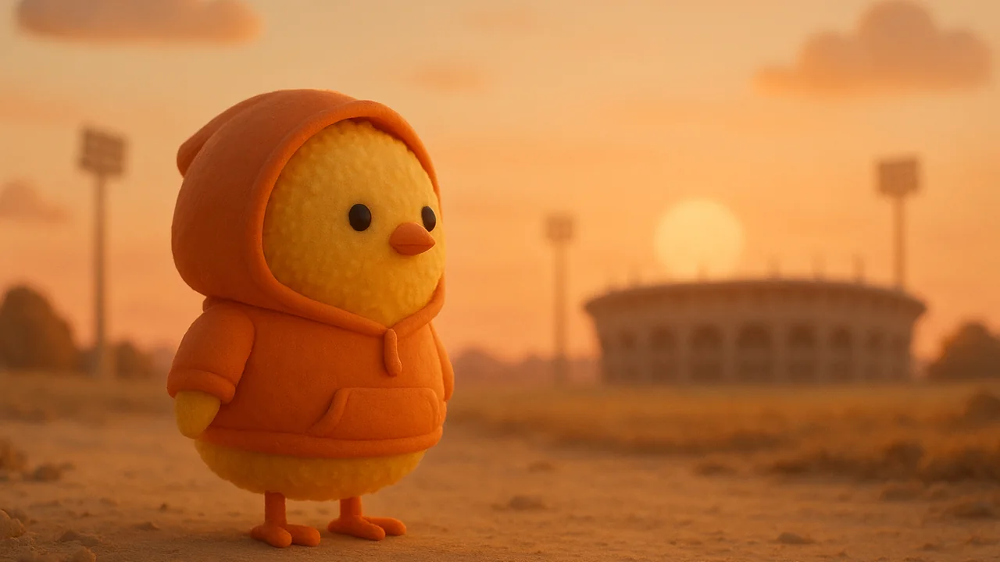
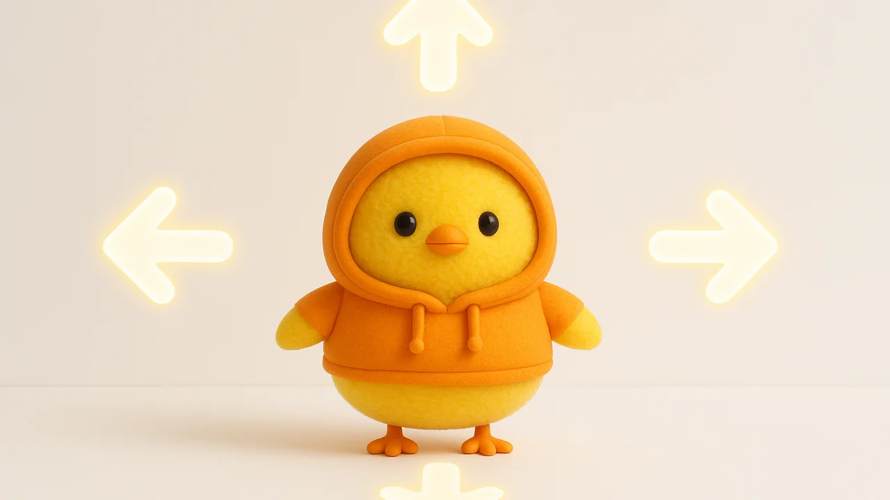
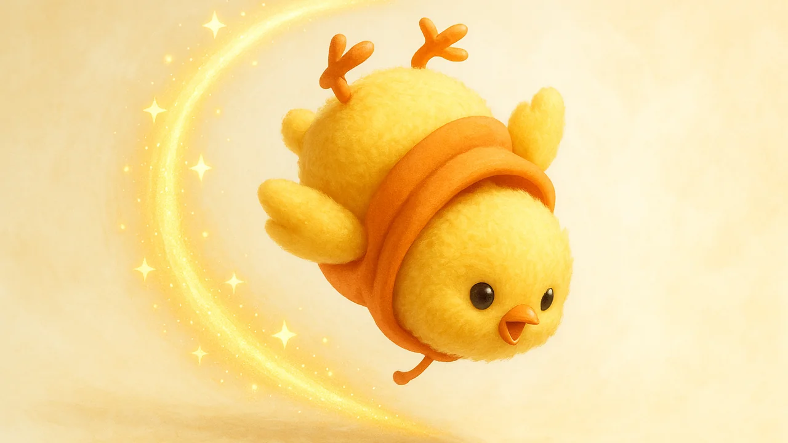
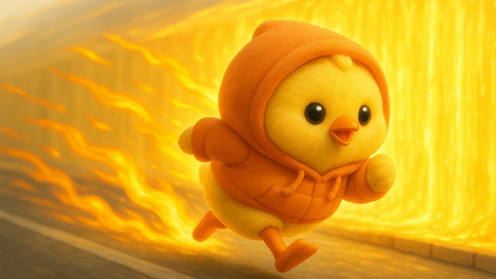
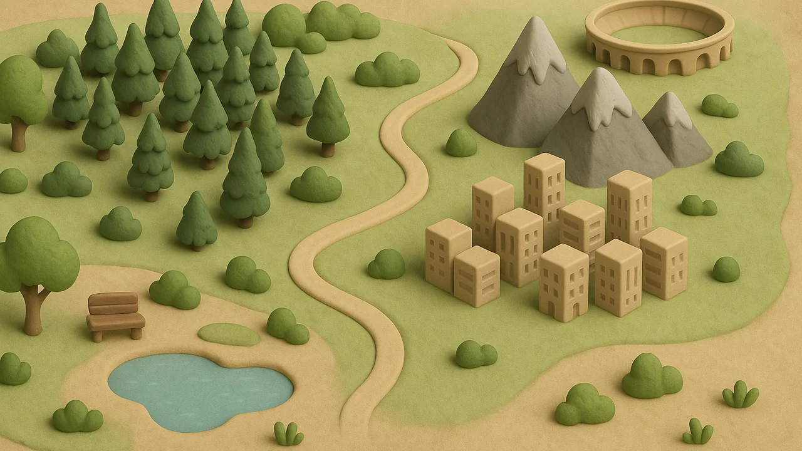

Mały biegus nie odleciał z kluczem.
Został, żeby wystartować w Wielkich Igrzyskach.
Karmisz go prawdziwym bieganiem — skrótów nie ma.
wkrótce: DUEL i Klucz Klubu 🔑
◀ ▶ pas · ▲/tap skok · ▼ ślizg · P pauza
ETAP 1
myśl na drogę
3
KSIĘGA TRIKÓW
SUPER KOMBA
BIEGAMY: WYZWANIE

RANKING
Prawdziwe kilometry karmią Biegusie. Tu widać, kto karmi najlepiej.
META!
🥇
3serca0piór0/2znaleziska0max seria60sczas0✦ styl
OJ, BIEGUŚ…
WIELKIE IGRZYSKA
WYSTARTOWAŁEŚ.
AKT I
PARK O ŚWICIE
PRZEMIANA
➜
BIEGUŚ
jesteśmy obok

Biegusy to ptaki wędrowne — całe życie w locie. Jesienią klucz zebrał się i odleciał na południe.

Jeden został. Ten najmniejszy — który zawsze wolał biegać. „Ptak, który biega?!" — śmiały się wszystkie, znikając za horyzontem.

A on ogłosił: „Wystartuję w Wielkich Igrzyskach. Tych dla ludzi." I zaczął trenować. Od dziś — z Tobą.
JAK SIĘ BIEGA

Sterowanie — swipe zmienia pas, tap to skok, swipe w dół to ślizg. Linie piór prowadzą przez bezpieczne miejsca.

Triki i komba — w locie: tap to salto, boki to śruby, dół to grab. Ląduj czysto, a bank wypłaci ✦. Pełna lista czeka w Księdze Trików.

FLOW — nakręć serię bez wpadki, a świat zapłonie. Przy krawędzi drogi stanie ściana światła: biegnij po niej, odbijaj się w locie.
Bieguś je prawdziwe treningi — one przesuwają go po Drodze. Skrótów nie ma. Jak w bieganiu.
DROGA NA IGRZYSKA
Każdy realny kilometr treningu przesuwa Biegusia w stronę startu Wielkich Igrzysk.
🐦
ŚWIAT BIEGUSIA
Cztery krainy, jedna droga. Kliknij region — zobaczysz, gdzie stoisz.

📖 PRZYGODA: ZEGAREK LEGEND
Łańcuch jak w starych przygodówkach — bez jednego ogniwa nie ruszysz następnego.
PAUZA
BIEGUŚ
Najedzenie (karmione treningami)
Więź
Wybiegane km (realne)
(przycisk dev — w aplikacji karmi go prawdziwy trening z zegarka)
STATYSTYKI ŻYCIOWE
KOLEKCJA ZNALEZISK
IMIĘ TWOJEGO PTAKA
UPIERZENIE
AKCESORIA (dotknij, by założyć)
WYBIERZ ETAP
🐿️ SKLEP U ZYZI
„Kto zbiera, ten ma!" — Zyzia handluje tylko piórami z biegania.
📜 ZLECENIA
Mieszkańcy potrzebują rzeczy, które znajdujesz na trasie (◆ znaleziska). Nowe zlecenia codziennie.
🎒 TWÓJ TOBOŁEK
Zyzia skupuje nadmiar po 8 🪶 za sztukę — ale zlecenia płacą lepiej!
🛒 TOWAR
👕 GARDEROBA
Ubierz Biegusia. Część rzeczy daje mikrobonusy — w Zawodach nie działają, tam liczy się czysty bieg.
Boostery działają 1 bieg i NIE działają w Zawodach — tam liczy się czysty bieg. Pióra zdobywasz wyłącznie bieganiem. Świeży trening sam daje ×2 piór — za darmo.